Formulario de la Conciliación Bancaria
El formulario de Conciliación Bancaria tiene como objetivo registrar una nueva conciliación dentro del sistema. En este formulario se ingresan los datos principales del banco, cuenta, periodo que se concilia, saldos y observaciones.
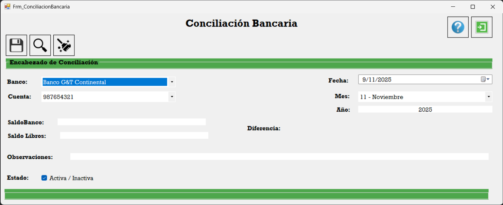Seleccionar Banco
Primero se selecciona el Banco con el que se desea realizar la conciliación. Esta opción permite elegir entre todos los bancos registrados en el sistema.
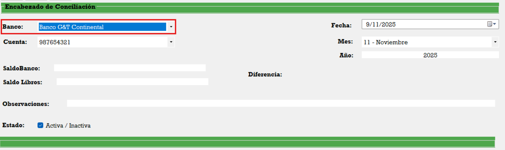Seleccionar Cuenta
Luego se selecciona la Cuenta Bancaria de dicho banco a la que se le realizará la conciliación. Solo aparecerán las cuentas asociadas al banco elegido.
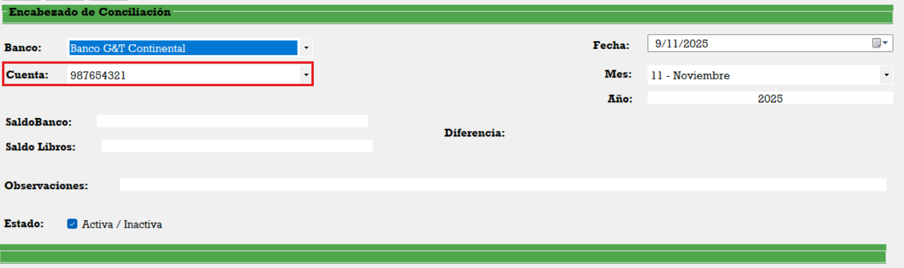Fecha de Conciliación
Aquí se selecciona la Fecha en la que se está realizando la conciliación. Generalmente corresponde a la fecha de cierre o revisión del estado de cuenta.
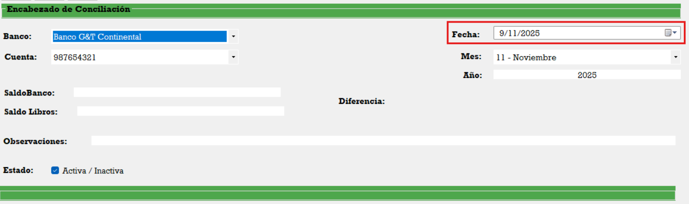Mes de Conciliación
En este campo se selecciona el Mes que se va a conciliar. El combo contiene los 12 meses del año y permite identificar el periodo contable.
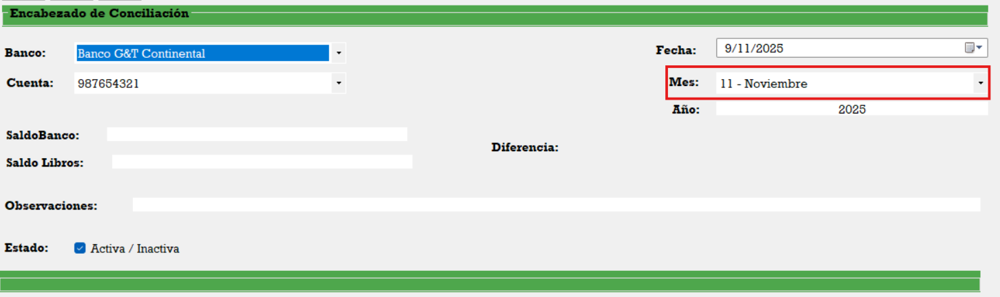Año de Conciliación
Aquí se elige el Año al que corresponde la conciliación. Esto ayuda a mantener un historial ordenado por periodos anuales.

Saldo de Banco
En este campo se digita el Saldo actual según el estado de cuenta del banco. Es el saldo que el banco reporta oficialmente.
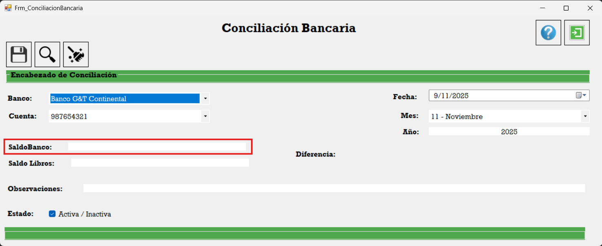Saldo de Libros
Aquí se digita el Saldo actual según libros, es decir, el saldo que aparece en la contabilidad de la empresa.
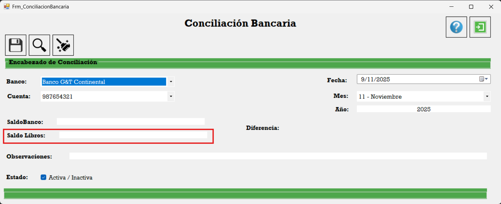Diferencia Calculada
Esta es la diferencia entre Saldo de Banco - Saldo de Libros. El sistema realiza automáticamente este cálculo y muestra el resultado para facilitar la conciliación.
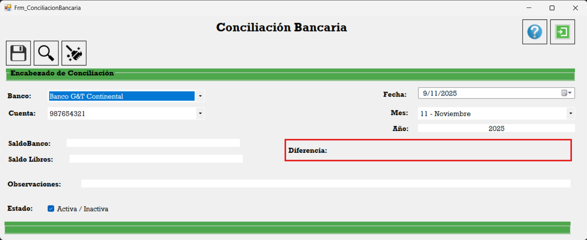Observaciones de Conciliación
En este apartado se pueden registrar las observaciones realizadas durante la conciliación: partidas en tránsito, cheques no cobrados, depósitos pendientes, errores detectados, etc.

Icono de Guardar
Una vez que todos los campos estén completos y revisados, se presiona el Icono de Guardar para registrar la conciliación en el sistema.
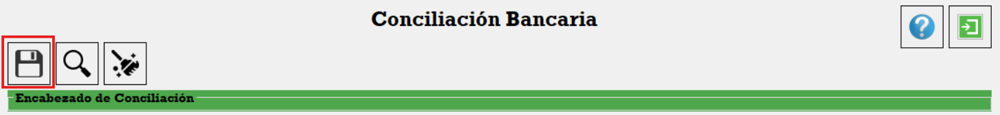Icono de Limpiar
El Icono de Limpiar borra el contenido de los campos del formulario, permitiendo comenzar de nuevo el llenado de la información.
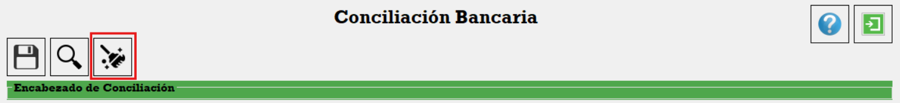Icono de Buscar Conciliación
Este ícono abre el formulario de Buscar Conciliación, donde se podrán visualizar todas las conciliaciones ya registradas en el sistema.
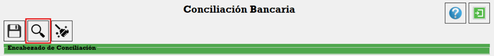Icono de Salir
El Icono de Salir cierra el formulario de Conciliación Bancaria y regresa a la ventana anterior del sistema.
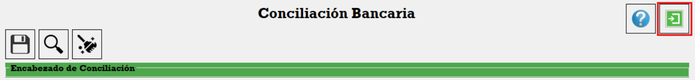Estado de Conciliación
El Estado de Conciliación indica si la conciliación está Activa o Inactiva. Esto permite controlar qué registros siguen vigentes dentro del proceso.
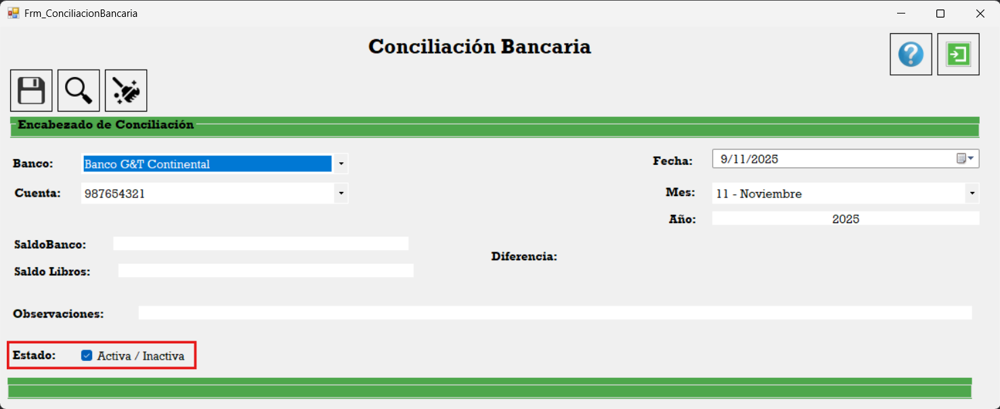